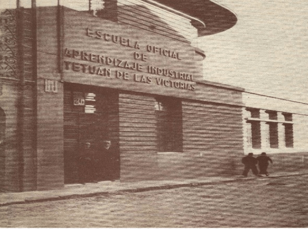
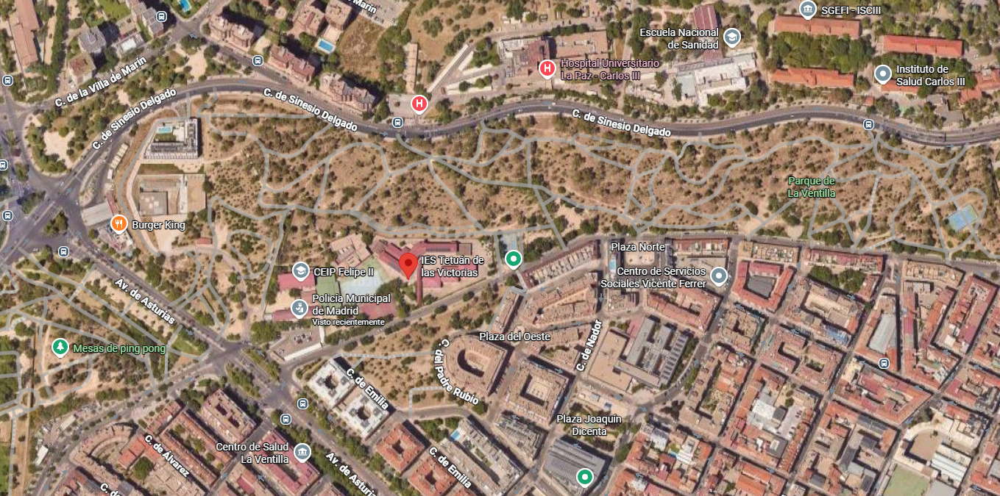

Información relevante sobre el IES Tetuán de las Victorias
Información sobre el centro
El 13 de octubre de 1933 se inauguró como Escuela de Orientación Profesional y Aprendizaje Chamartín de la Rosa, situada en la calle Castillejos, hoy calle Limonero, en el municipio de Chamartín de la Rosa, uno de los más grandes de España en ese momento. En 1954 el nombre del centro cambió y pasó a llamarse Tetuán de las Victorias, nombre del distrito en el que se encontraba, debido a que el municipio de Chamartín de la Rosa había desaparecido, incorporándose a Madrid en 1948.

Dirección
El instituto de formación profesional Tetuán de las Victorias se encuentra en Madrid, está bastante bien comunicado, ya que se puede llegar en coche , llegando a la dirección en la que se encuentra C/ Vía Límite, 14, Madrid 28029 y se puede aparcar dentro del parking que tiene el centro. Tambien se encuentra muy bien conectado con el transporte público de Madrid, en la linea 9 - Metro La Ventilla y los autobuses de las líneas 42 y 147.
Entorno
El centro tiene un parque por detrás, con mucha vegetación y espacio para caminar o realizar actividades deportivas, concrétamente el parque de La Ventilla. Tambien tiene el colegio CEIP Felipe II justo al lado y más adelante nos encontramos con la Comisaría Integral del Distrito Tetuán de la Policía Municipal de Madrid.
